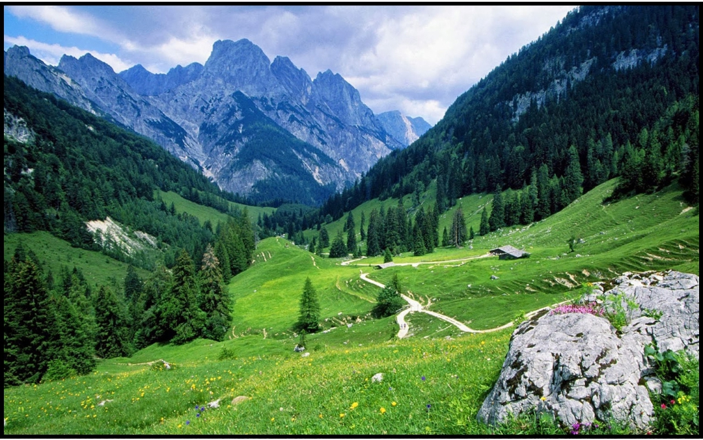
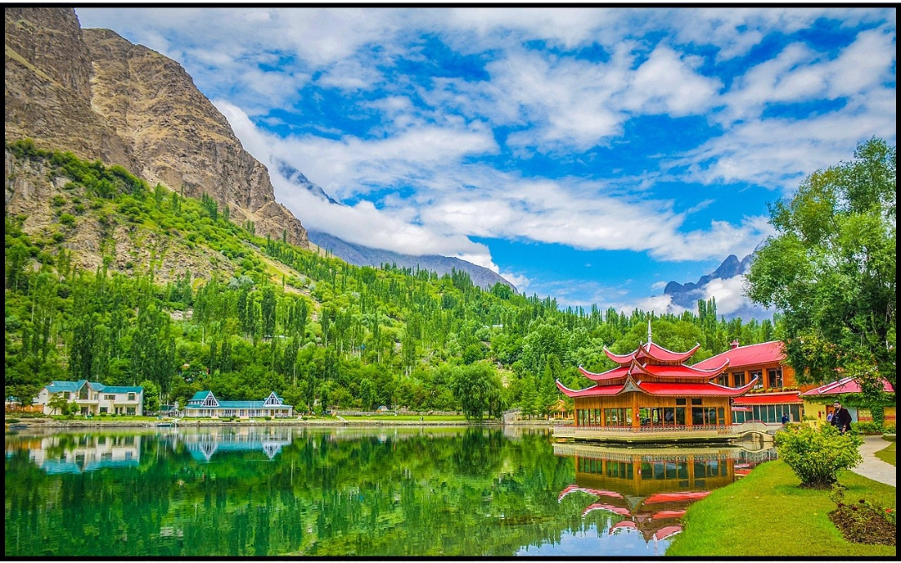

Explore Pakistan's Best Destinations
Pakistan is home to some of the most stunning destinations in the world. Here are three must-visit places:
Swat Valley
Known as the "Switzerland of Pakistan," Swat Valley is renowned for its lush green valleys, flowing rivers, and rich cultural heritage. It's a perfect destination for hiking and exploring nature.
Hunza Valley

Hunza Valley, located in the Gilgit-Baltistan region, is famous for its breathtaking landscapes, crystal-clear lakes, and majestic mountains. It's a paradise for nature lovers and adventure seekers.
Skardu
Skardu, the gateway to the world's highest peaks, is a haven for trekkers and mountaineers. With its stunning landscapes, including Shangrila Resort and Upper Kachura Lake, Skardu is a must-visit destination.